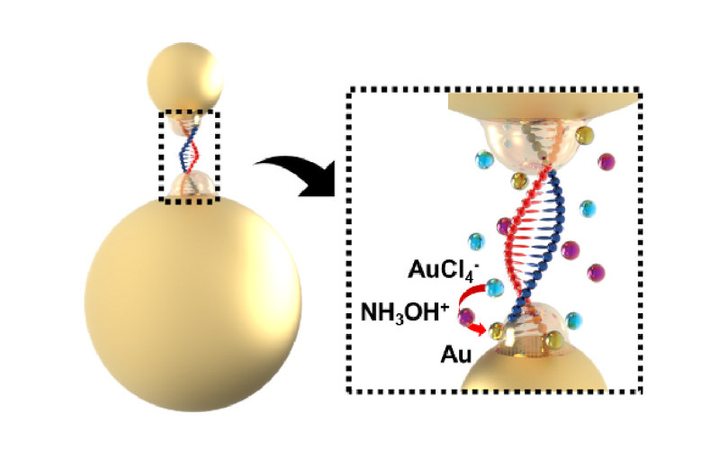
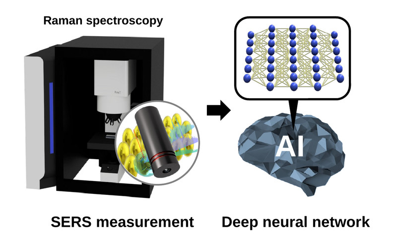
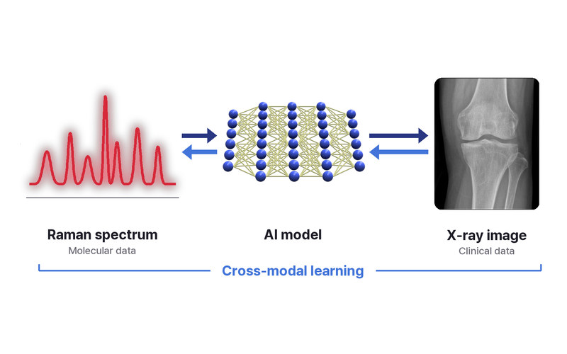

나노바이오 융합 연구실Nanobiomaterial Engineering Sensing Technology Lab
플라즈모닉 나노입자 기반 바이오센싱과 AI를 활용한 임상 분석, 라만 크로스모달 연구를 통해 질병을 더 빠르고 정확하게 진단하는 기술을 개발합니다.We develop faster, more accurate disease diagnostics through plasmonic nanoparticle-based biosensing, AI-driven clinical analysis, and Raman cross-modal research.

Plasmonic Biosensing
플라즈모닉 나노소재와 SERS로 극미량의 질병 바이오마커를 검출하는 초고감도 바이오센서를 개발합니다.Ultrasensitive biosensors that detect trace disease biomarkers using plasmonic nanomaterials and SERS.
자세히 보기Learn more →
AI Clinical Analysis
분자 데이터와 임상 데이터를 AI로 분석해 질병을 진단하고 진행을 예측합니다.AI analysis of molecular and clinical data to diagnose disease and predict its progression.
자세히 보기Learn more →
Raman Cross-modal
분자 데이터와 임상 데이터를 함께 학습해 두 데이터의 관계를 찾고 새로운 진단 지표를 만듭니다.Joint learning of molecular and clinical data to uncover how they relate and to build new diagnostic indicators.
자세히 보기Learn more →인턴 및 대학원생을 모집합니다We are recruiting interns and graduate students
나노바이오 융합 연구실(NEST)에서 훌륭한 선배들과 함께 성장할 신입 연구원을 모집합니다. 나노·바이오 실험부터 AI 기반 의료 데이터 분석까지,
장비와 인프라의 한계 없는 환경에서 올라운더 연구자로 성장하고 싶은 분들의 적극적인 지원을 바랍니다.Join NEST Lab and grow alongside great senior members. From nano-bio experiments to AI-based medical data analysis, we welcome anyone who wants to become an all-round researcher in an environment with no limits on equipment and infrastructure.
- 모집 과정Positions
- 학부 연구생(인턴), 석사과정, 석·박사 통합과정Undergraduate research interns, M.S. students, integrated M.S./Ph.D. students
- 지원 사항Support
- 대학원 정규학기 등록금, 연구 장려금 및 인건비 지급 · 국내외 학회 참가비와 출장비 지원 · 연구에 필요한 장비와 재료 전폭 지원Graduate tuition, research stipend and salary · Registration and travel support for domestic and international conferences · Full support for research equipment and materials
- 2026.10 김동균 학생이 한국엑소좀학회(KSEV 2026)에서 우수포스터 발표상을 수상했습니다.Dong Gyun Kim received the Best Poster Presentation Award at KSEV 2026.